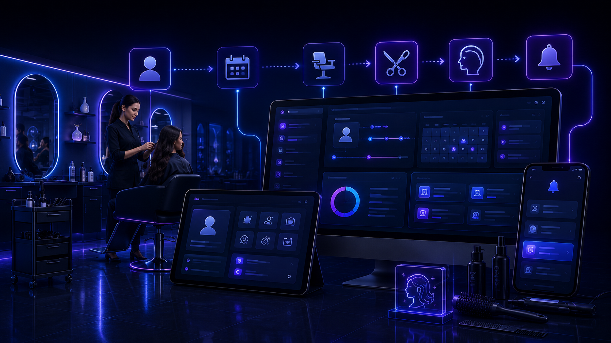

VVZ ERP Suite pour salons de beauté et instituts
Pendant une prestation, il n’est pas toujours possible de répondre au téléphone. Entre une nouvelle demande, un rendez-vous à déplacer, une annulation, une cliente qui pose une question et un créneau qui vient de se libérer, les informations peuvent rapidement se retrouver entre le téléphone, les messages, le planning et la mémoire de l’équipe. Le problème n’est pas votre outil de réservation : c’est ce qui se passe autour lorsqu’il faut retrouver la dernière demande et savoir qui doit agir.

Le vrai problème : les changements arrivent pendant que vous travaillez
Un rendez-vous peut être déplacé pendant qu’une prestation est en cours, une cliente peut annuler, une nouvelle demande peut arriver par message et un créneau peut se libérer quelques minutes plus tard. Si chaque information reste dans un canal différent, il faut ensuite reconstruire ce qui s’est passé.
Avant
Le rendez-vous est dans le planning, la modification dans un message, la question de la cliente dans une autre conversation et certaines choses à rappeler restent simplement en mémoire.
Après
Chaque demande peut regrouper la cliente, la prestation, la date souhaitée, le rendez-vous, la personne concernée, le statut et l’historique des changements.
Les situations typiques d’un salon ou d’un institut
Nouvelle demande
La cliente demande une prestation, un prix, une disponibilité ou un rendez-vous et les informations utiles restent associées à sa demande.
Rendez-vous et prestation
La prestation, la durée utile, la date, le créneau et la personne concernée peuvent être regroupés dans le même suivi.
Déplacement ou annulation
Lorsqu’un rendez-vous change, l’information peut être mise à jour sans laisser l’ancienne consigne comme seule référence dans un message.
Créneau libéré
Lorsqu’une annulation libère une place, l’équipe peut retrouver plus facilement les demandes qui attendent encore une réponse ou une disponibilité.
Un parcours simple, de la demande au rendez-vous terminé
Demande cliente
La cliente indique la prestation recherchée, ses disponibilités ou sa question.
Prestation et disponibilité
Les informations utiles sont enregistrées afin de savoir ce qui est demandé et quel créneau peut convenir.
Rendez-vous confirmé
Une fois le créneau choisi, la demande garde la date, la prestation et la personne concernée.
Modification
Si la cliente décale ou annule, le changement peut être enregistré avec la demande au lieu de rester uniquement dans une conversation.
À venir
L’équipe retrouve les rendez-vous et les informations utiles avant l’arrivée de la cliente.
Terminé et historique
Après le rendez-vous, le statut peut être mis à jour et l’historique reste disponible pour retrouver les échanges et changements utiles.
Moins de messages uniquement pour reconfirmer un rendez-vous
Selon la configuration choisie, la cliente peut recevoir une confirmation ou un rappel lié à son rendez-vous. L’équipe évite ainsi une partie des échanges répétitifs tout en gardant la main sur la relation client.
Le salon garde ses repères
Votre système de réservation peut rester en place
Si votre planning ou votre outil de réservation fonctionne déjà bien, il n’est pas nécessaire de le remplacer. VVZ ERP Suite peut surtout organiser les demandes, changements et informations qui se trouvent aujourd’hui autour de ce planning.
Excel peut rester dans le flux
Si vous utilisez déjà un tableau pour certaines informations, il peut rester une référence. Le journal peut reprendre les données réellement utiles à votre activité.
Un export utilisable dans Excel
Les données utiles peuvent être exportées dans un fichier CSV compatible avec Excel, avec une structure adaptée à vos colonnes de travail.
L’information reste accessible là où l’équipe travaille
L’outil local
Le salon peut utiliser un outil local pour retrouver les demandes, prestations, rendez-vous, changements, responsables, statuts et notes.
Le serveur
Le serveur intervient uniquement pour les fonctions qui en ont besoin, par exemple recevoir une demande depuis le site ou synchroniser certaines informations.
Telegram
Telegram peut simplement prévenir les personnes autorisées lorsqu’une nouvelle demande arrive ou lorsqu’un changement important doit être vu rapidement. Le suivi principal reste dans l’outil.
Responsabilité visible
Chaque demande peut montrer qui doit répondre, confirmer un rendez-vous ou traiter une modification.
Adapté à votre salon
VVZ Studio adapte les informations, les étapes et les rôles à votre façon de travailler au lieu de vous imposer un fonctionnement rigide.
Questions fréquentes
Faut-il remplacer notre système de réservation ?
Non. S’il fonctionne bien, il peut rester en place. L’objectif est surtout d’organiser ce qui se passe autour : nouvelles demandes, changements, questions, confirmations et suivi.
Peut-on gérer les annulations et déplacements ?
Oui. Un changement de date, de prestation ou de personne peut être associé à la demande afin que l’équipe retrouve la dernière information utile au même endroit.
Faut-il abandonner Excel ?
Non. Les tableaux existants peuvent rester une référence et les données utiles peuvent être exportées en CSV compatible avec Excel.
Démonstration vidéo prochainement
Une courte démonstration montrera comment une demande, un rendez-vous, une modification, une attribution et un changement de statut peuvent être suivis dans le système.
Un périmètre défini clairement
Les fonctions, les accès, les informations suivies et les éventuelles intégrations sont définis avec le salon ou l’institut avant la mise en place.
Un prix basé sur votre fonctionnement réel
Le prix dépend de votre organisation actuelle, des outils déjà utilisés, du nombre d’étapes à suivre et des fonctions dont votre activité a réellement besoin. L’objectif n’est pas de vous vendre des modules inutiles.
Découvrez aussi l’ensemble des options et intégrations de VVZ Studio.